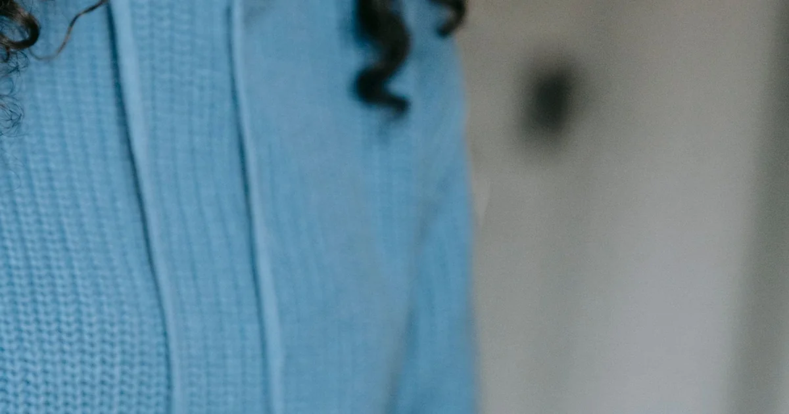
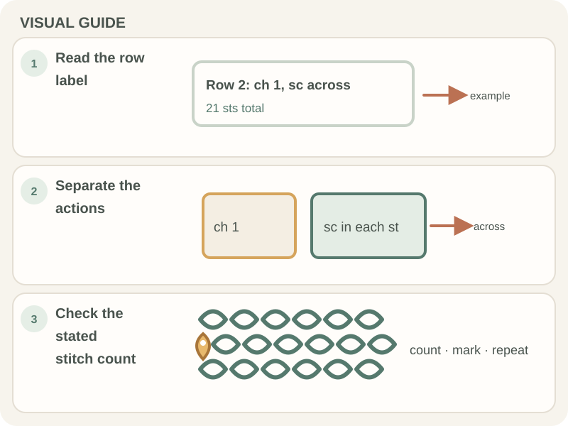

Patterns & Troubleshooting · Beginner guide
How to Read a Crochet Pattern Step by Step
Read a crochet pattern by checking terminology, stitch key, repeat punctuation, and row counts before starting.

Patterns use conventions that may differ by publisher. Reading notes first can prevent a US/UK terminology mix-up or a misunderstood repeat.
Before you begin
Gather the listed yarn and hook, identify terminology and abbreviations, and mark the row or round you are working.
Step-by-step instructions
- Read materials, gauge, notes, and abbreviations before beginning.
- Scan the full instruction to locate repeats and any stated stitch count at a row’s end.
- Work one line at a time, marking repeat boundaries and checking counts before moving on.
- For unclear directions, consult the pattern key or publisher instead of importing a rule from another pattern.

What to check
Read the notes before the stitches
A row count helps check progress but does not explain every construction choice. If it differs, review turning-chain rules and repeat boundaries before undoing the row.
Frequently asked questions
Do parentheses always mean a repeat?
No. Patterns use punctuation differently. Read the key and exact wording around the marks.
What if an abbreviation is missing?
Check the publisher’s notes or contact the source. Uncommon terms may not have a universal meaning.
Read the pattern notes before stitching
For reading a crochet pattern, use this as the starting rule: read the materials, terminology, gauge, stitch notes, repeats, and finishing instructions before beginning. The publisher’s key and terminology tell you how to read that specific set of instructions. Read the relevant instructions before beginning and keep them nearby as you work. If a general tutorial and the pattern give different directions, follow the pattern’s stated convention; another project may use a different method.
Check terminology and gauge
Before proceeding, confirm the meaning of brackets, parentheses, commas, and repeat language in that pattern. Write any project-specific choice in your notes so you can apply it consistently. If the pattern or label leaves the detail unclear, look for its own key or maker guidance rather than assuming that another project follows the same convention. This short check can prevent a small misunderstanding from affecting the rest of the work.
Break down a repeat instruction
A practical way to apply reading a crochet pattern: Take one short instruction from a pattern and mark each completed repeat and keep row or round notes. Mark the line, chart row, or repeat where you stopped, then check that the next step follows from the key and count. Working through a small section on paper or in a swatch can expose unfamiliar notation before it affects a larger part of the project.
Track row or round counts
A common mistake in reading a crochet pattern is skipping the pattern notes and relying only on abbreviation familiarity. Watch for this sign: a repeated section is worked the wrong number of times. That can shift the stitch, repeat, or chart symbol and alter the instruction sequence. Compare the recent work with the pattern and locate the first point where they differ. Correct that detail before continuing; stretching the fabric or adding an unplanned step can hide the cause without fixing it.
Mark your place on the page
If a repeated section is worked the wrong number of times, first check the meaning of brackets, parentheses, commas, and repeat language in that pattern. Then compare the terminology, key, repeat marks, and row or round count with what you actually have. Change one thing at a time so you can tell whether it addresses the problem. If the instructions and materials match but the result still differs, use the project’s gauge, sizing, substitution, or care notes as relevant; those are more useful than a universal fix.
Resolve notation before continuing
Remember: translate the notation into a clear sequence before stitching. A publisher’s notation is specific to its pattern, so write down the terminology and symbols you have confirmed. If you choose an alternative, record it and compare a small sample or written step before applying the change across the project.
Follow one short section step by step
To make reading a crochet pattern easier to repeat, use this sequence: mark each completed repeat and keep row or round notes, inspect the result, and only then continue. At first, slow down at the point where the pattern changes direction, begins a new round, or starts a repeat. A removable marker or brief row note can hold your place while you learn the construction. Once the sequence is clear, you can work more steadily without guessing which loop or instruction comes next.
Conclusion: Reading a crochet pattern
Keep this lesson in mind: translate the notation into a clear sequence before stitching. Keep the verified key and terminology beside the instructions. Mark the repeat’s start and end on the page, then record how many times the pattern says to work it. Do not infer a repeat count.